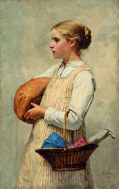

Menachot 15 - The Other Part of an Invalidated Offering
If one part of the two flour offerings discussed previously - Shavuot and Bread of Vision - became ritually impure, then what should be done with the remaining valid part? Rabbi Yehudah says that it should be burned, because it does not have its companion part, but the Sages maintain that only the invalid part is burned in a special place designated as "the place of burning," but the remaining pure part can be eaten.
What is the reason of Rabbi Yehudah? He has a tradition from his teachers that communal flour offerings, such as two loaves of Shavuot and the Bread of Vision, which is arranged in two piles, must be treated as a single unit. Thus, if part of it has been invalidated, none of it is valid.
A thanksgiving offering was accompanied by 40 loaves of bread. The celebrant would invite as many guest as he could, since the loaves had to be eaten that night. The wrong intent to eat the animal thanksgiving sacrifice beyond this time time makes the loaves rejected, but the wrong intent about the loaves does not make the sacrifice rejected.
Art: Albert Anker - Girl with Loaf of Bread